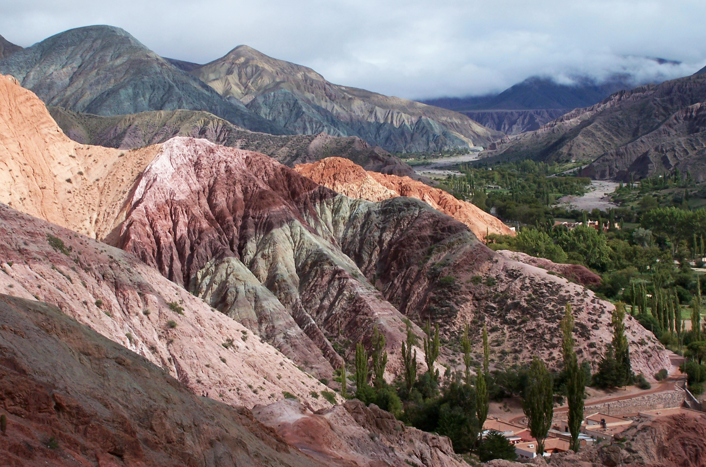
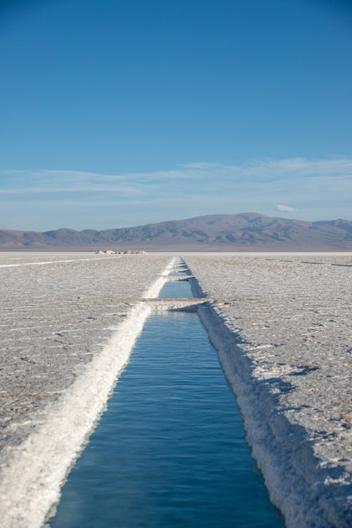

Explora los colores del norte argentino y vive una experiencia única.

El Cerro de los Siete Colores y su feria artesanal única.

Un desierto blanco a más de 3000 metros de altura.
Cultura viva y el histórico Pucará en el corazón de la Quebrada.
Visitantes Mensuales
Destinos Únicos
"La Quebrada es mágica, los colores son increíbles."
"Las Salinas Grandes son un lugar de otro planeta. ¡Volveré!"